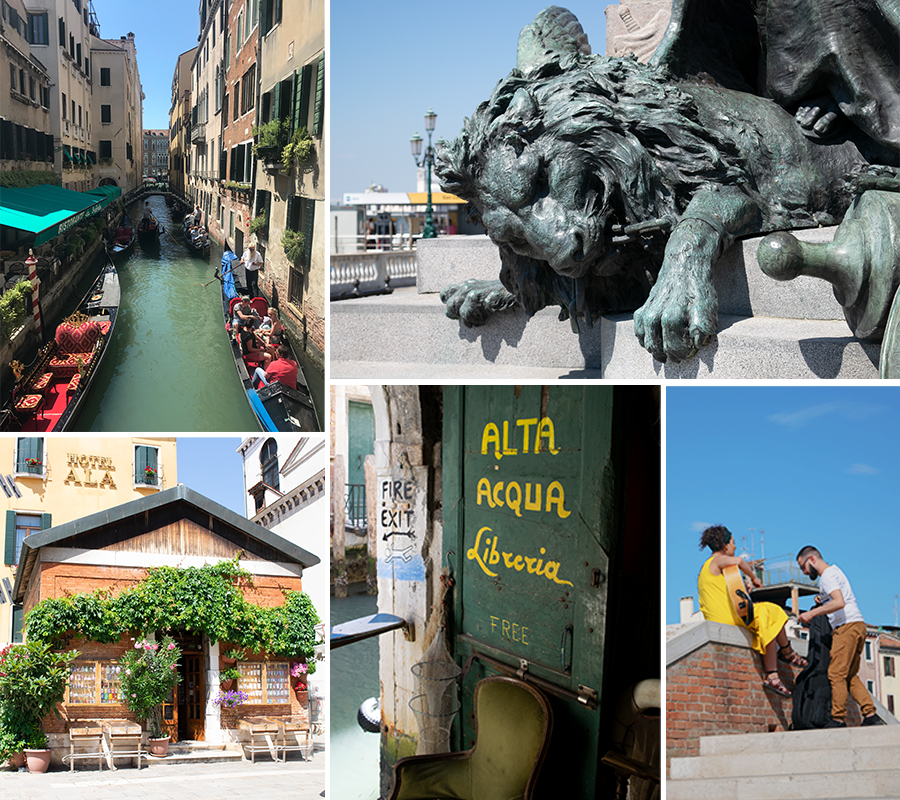

ROME

I wish I could live in Venice, but at 700€ per square foot (roughly
$1000
per
square foot). That is not
happening.
I loved the lack of streets and endless systems of alleyways that you could get lost in and yet
easily
find your
way back home. One evening we stumbled on a residential area
that was not crawling with tourists. We found a small potluck celebrating Venice with a band,
food,
and
Venice
merchandise. Then shortly
after we stumbled on a small band playing at another old well courtyard with people dancing and
singling
along.
For a couple days, I had been trying to hunt down a cotton Venetian flag to bring home. I
finally
found
one in a
small shop and the
cashier was so excited to practice his English and give me a history lesson about the flag and
city.
Speaking of
history, Venice has such a rich
history which includes being excommunicated six times. St. Mark became their patron saint by
well,
being
stolen,
literally. Venetian
merchants stole the body of St. Mark to build a cathedral around his bones. You can find his
loin
not
only on
their flag, but also
as statues all round the city, many of which depict it being liberated by Lady Liberty.
Cinque Terre was beyond beautiful. We took the trian between the five towns: Monterosso,
Vernazza,
Corniglia, Manarola and Riomaggiore. Most of them
were situated in the bottom of a valley on the coast. We would hike up into the vineyards the
surrounded
and looked down at the towns.
Many of the old grape carts were still sitting up in the hills. These looked like little
monorails
that
wove through the hils and down into town.
They looked like they would have been so fun to ride
We got to drink the most delicious lemoncello made from the lemons they grow there while we
shared a
giant bowl of
the freshest and moat delicious seafood pasta, caught off of the shored there. We wrapped up of
day
laying on the rocks at the
Grotta di Lord Byron near our hostel, after swimming in the warm waters, watching the sun sink
over
the cliffs.
Pisa was a quick stop on our drive to Naples for our Pompeii visit. I couldn't be more thankful
for
the
beautiful weather and bright blue
skies as the background to my photos for the day. It just blows my mind though, that with so
many
people
holding the tower up, that
it is still leaning that much.
I wish we could have spent more time in Pompeii and explore more but we were on a guided tour so
time
was limited. Ite
was very interedsting to see the old shop fronts along with the cooking pot.
I had watched some documentatries on Pompeii nad in a recent one I had learned tht it was quite
a
raunchy
place, one could find phallic carvings in the cobble stones pointing to the location of the
brothels, we
were able to find one.
Another interesting sight was just seeing the level of the ash and soot based on the height that
was
preserved
of the buildings. We also saw many casts of the preserves residents and animals. It was sad to
learn
how
trapped they really were.
Many were warned of the disaster that could have occured, but if they left that was it. No
matter
what,
they would have lost their homes and
any posessions that they couldn't bring with them. There was a high possiblity that if they left
the
city they could have been captured
and trapped into slavery. Many figured they would rather chance what nature had in storefro
them.
The explosion was so violent that Mt. Vesuvius split into two. The double peaks stand as
beautiful and as haunting as they did all of those years
ago.
Florence was quite amazing. One of the most memoriable moments was when we climbed the Duomo di
Firenze. There was a competition held for the design of the dome
between two master goldsmiths, Lorenzo Ghiberti and Filippo Brunelleschi. Brunnelleschi won
while
Ghiberti went on to design the bronze doors of the Baptistery, which were also a sight to
behold.
The Dome is the third tallest in the world and
and based on measurements should physcally be impossible. No lives were lost in the creation of
the
376' tall dome.
463 steps will take you to the top of the Dome but the trip is not for those scared of tight,
dark
spaces. Many places there is no room for 2 people to squeee
past each other and some steps require you to stoop down while climbing the very steep steps.
The
views of Floence though are breathtaking!
I vowed to try some of the regional dishes of each location that we visited. We stummbled on a
small
cafe where the owner blew us away with how smoothly she transitioned
between, Italian, English, and French. I ordered the typical Florentine dish, lampredotto. This
caused the owner to do a double take hearing an American
order the sandwhich. Lampredotto is a sandwhich made of the fourth stomach of a cow. It is slow
cooked in a vegetabkle broth with herbs, and chopped into stripes.
It was served on a bun that was dipped in the broth and coated with a spicy green sauce. It was
one
of the most delicious sandwhiches that I had ever had.
Very flavorful, similar to chewier pulled pork but not as heavy feeling.